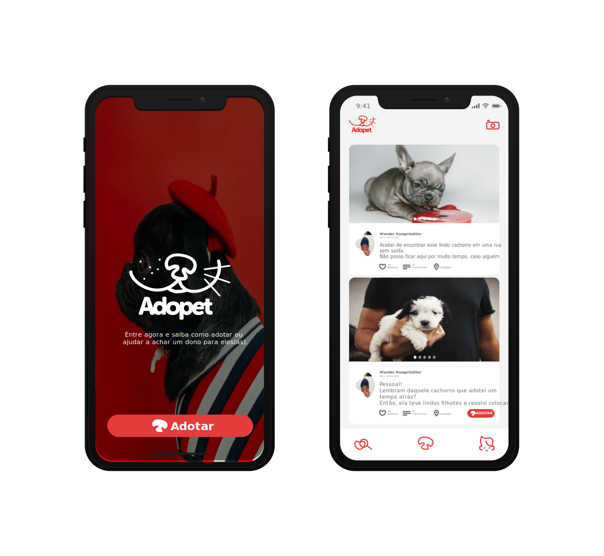

Logos
Quando pensamos na criação da logo, tentamos aproximar o máximo o gato do cachorro,
coisas que muitos consideram ser complicado, a convivência desses dois felinos próximos
uns dos outros.
A palavra Adopet houve uma mutação entre:
Adotar + Pet = Adopet
De certa forma conseguimos juntar dois idiomas em uma só palavra.
Sem dúvidas esse também é o grande motivo para a criação deste projeto.
Juntar todos os tipos de ajudas para o bem dos nossos queridos animais de estimação.
Cores
Queremos que o amor seja a melhor coisa entre as nossas conexões para adoção e amizade de novos animais.
E uma cor que representa predomina é a cor Vermelha que de certa forma, representa para nós amor.
Illustração
Todas as ilustrações foram criadas de forma exclusiva para dar um diferencial em nosso projeto.
Há uma semelhança em alguns dos nossos ícones e ilustrações, mas nada que comprometa o proposito do projeto.
Botões
O objetivo final é clicar no botão mais desejado para nossos amiguinhos o botão de Adotar.
Então, por se tratar de um amor que surge tanto de nós humanos como a dos nossos animais ao serem
identificados uns com os outros, a cor vermelha mais uma vez nos da a certeza de que é amor!
Navegação
Por tratar-se de um aplicativo, e pensando na forma acessível de tirarmos fotos de alguns dos
nossos amiguinhos perdidos, a ideia inicial é o desenvolvimento para as plataformas
Android e iOS.

Parceiros e Colaboradores
Sem dúvidas não daríamos continuidade no projeto se não fossem por causa dessas pessoas incríveis que
resolveram usar seus melhores conhecimentos para ajudar no desenvolvimento e ideias para
salvar todos os nossos animais.
Doações
O nosso projeto é totalmente sem fins lucrativos. Entretanto, precisamos arcar com algumas despesas
para contratações de alguns programas e serviços para o melhor funcionamento e desenvolvimento do nosso projeto.
Pensando nisso, colocamos a opção de doações. O botão abaixo vai te redirecionar para uma página onde nela,
você colocará o valor que deseja nos ajudar para darmos continuidade ao projeto.
Obs.: Não queremos nada que seja comprometedor a seu financiamento. Por isso, o valor simbólico para arrecadação
é com o valor inicial de R$1 (um real).
Fazer Doação